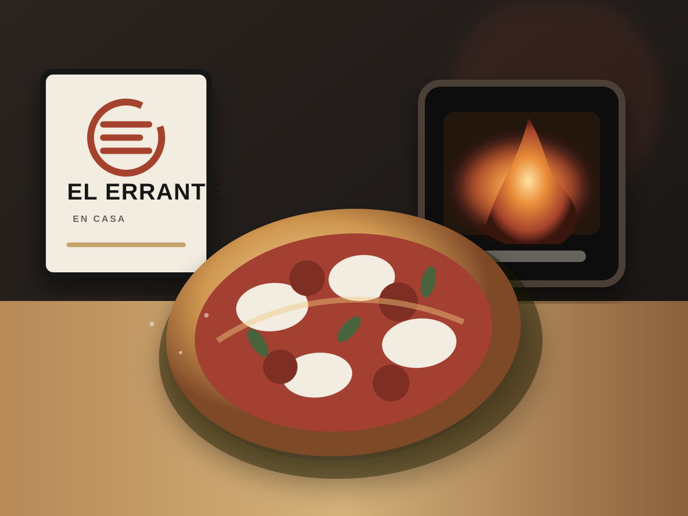

Cinco sabores desarrollados
Hechas aquí. Terminadas en casa.
Masa propia, recetas completas y productos diseñados para recuperar estructura, queso y aroma al volver al horno.
El Errante en Casa
Cinco perfiles. Una masa.
La demo presenta la colección completa, aunque el piloto comercial pueda iniciar con tres referencias.
Preparación general
Mira primero la pizza. Después, el reloj.
Precalienta completamente el equipo.
Retira del empaque directamente desde congelada.
Hornea hasta recuperar base, borde y queso.
Agrega el acabado, reposa y sirve.